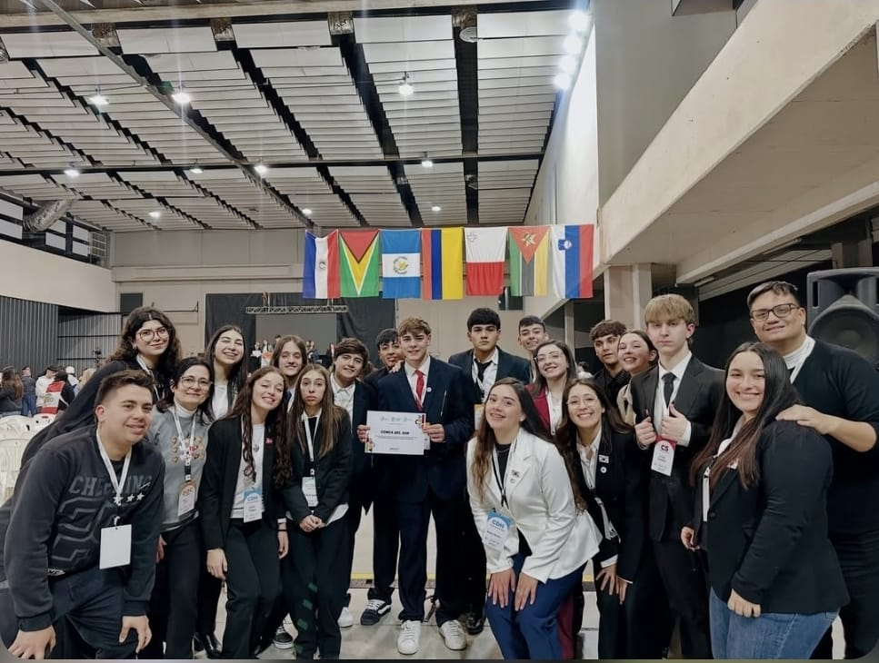
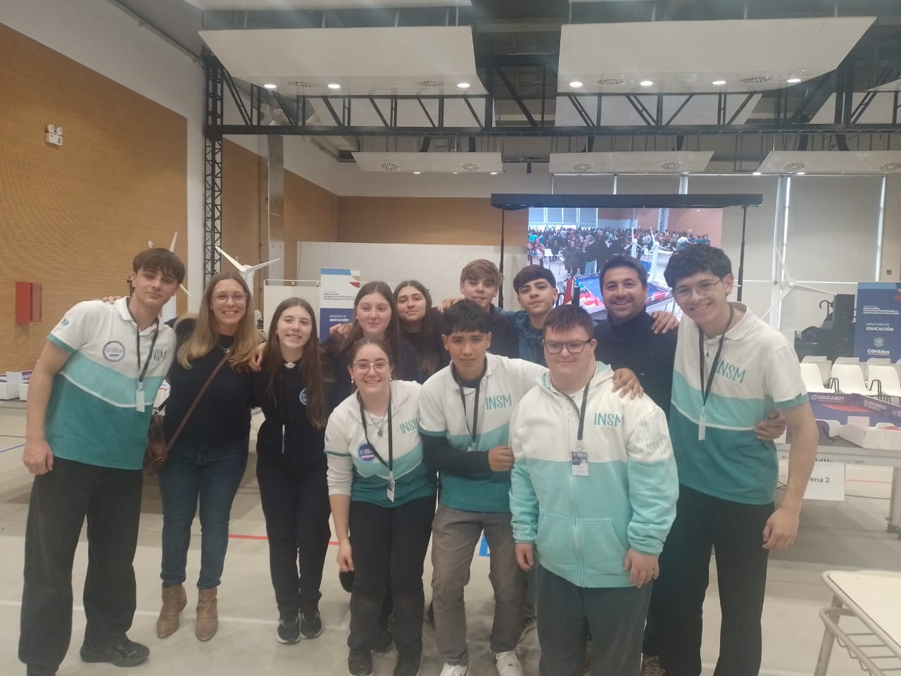
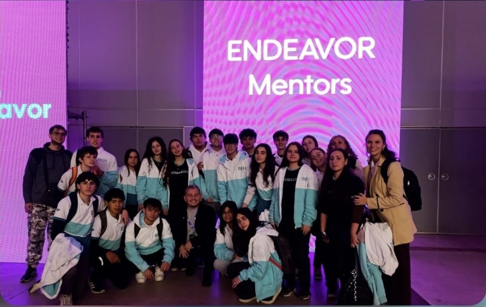
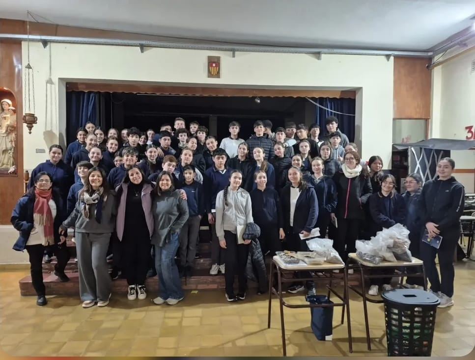
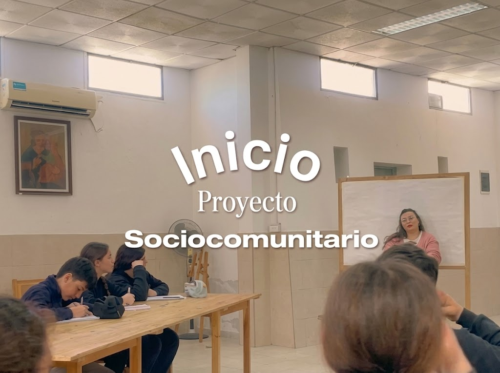
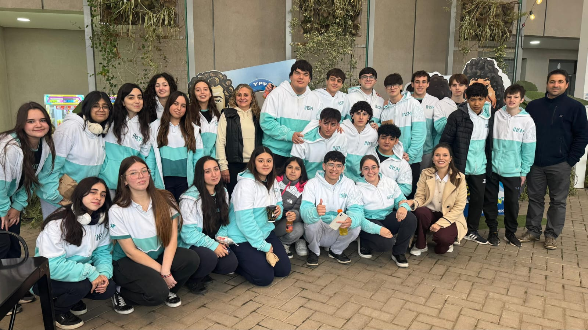
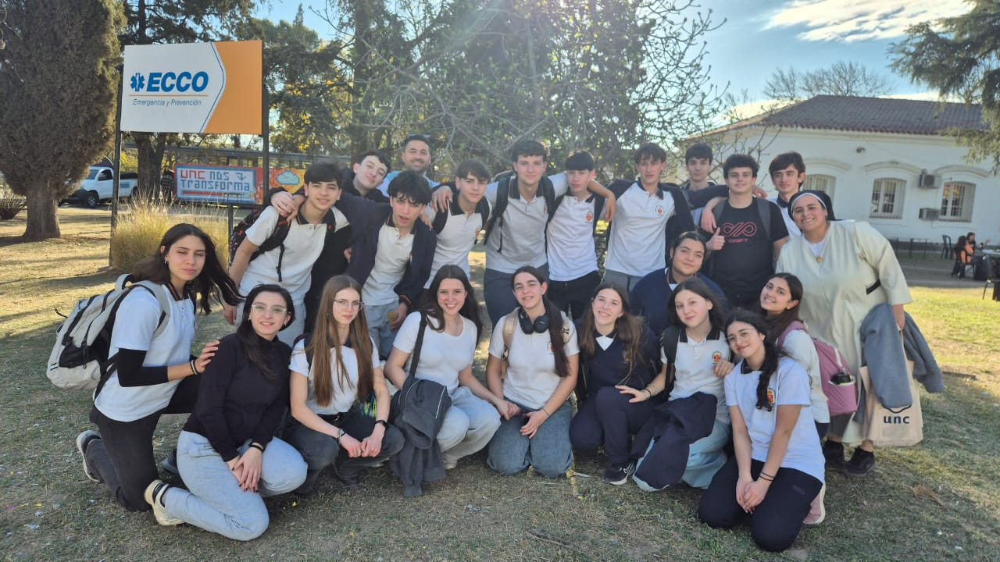

Proyectos
Proyectos Institucionales
A lo largo del año, nuestros estudiantes participan de distintos proyectos y experiencias que complementan su formación académica. Esta sección se irá ampliando con más información e imágenes de cada proyecto.

Primer Modelo de Naciones Unidas: una experiencia que valió la pena
Estudiantes de 4°, 5° y 6° año participaron de la 26ª edición del Modelo de Naciones Unidas de la ciudad de San Francisco, a cargo de las profesoras Andrea Miretti y Ana Luz Torresi. Representaron a República de Corea, Reino de Dinamarca y ACNUR. Felipe Gordo fue distinguido como Mejor Embajador de Sala de Tratados, y se reconoció el acompañamiento del profesor Sergio Maranzana.

Copa Robótica Educabot 2026: competir también es aprender
Competencia federal de robótica, programación e inteligencia artificial para jóvenes de 15 a 18 años. De 580 equipos a nivel provincial, dos de nuestra institución (6° B y 5° B, especialidad Informática) llegaron a la semifinal, obteniendo los puestos 12° y 22° respectivamente. Acompañados por los profesores Carlos Clara y Macarena De Yong.

Endeavor Córdoba: emprender no se hace solo
6to año B asistió a esta experiencia de emprendedurismo desde el espacio curricular EOI: Informática Aplicada, con la Prof. Diamela Álvarez Novara.

Cooperativa y Mutual Escolar: comunidad que se construye con pequeños gestos
Proyecto llevado a cabo en conjunto por ambas divisiones de 3er año (A y B), donde los estudiantes gestionan una cooperativa y mutual escolar.

Proyecto Sociocomunitario | 4.º B 2026
Los estudiantes diseñan una red de Internet en Cáritas para un proyecto de comunicación destinado a niños.

Proyectos INSM 6.º B Informática
Seis proyectos ideados por estudiantes para resolver problemas reales de la institución mediante informática, robótica y programación.
Tutorías de Robótica y Tecnología
Proyecto conjunto entre 5to y 3er año coordinado por el Prof. Carlos Clara: los estudiantes de 5to año, desde el área de Robótica, dan tutorías a los de 3er año desde Tecnología.
Radioteatro – 6to A
Producción de radioteatro realizada por los estudiantes de 6to año A, con posibilidad de extenderse a otros cursos.
Festival Mercedario
Antes conocido como "El Desfile", organizado por la ex directora y profesora Marisa Brisio (hoy retirada). Ahora es el Festival Mercedario, a cargo de la Prof. de Artística Camila Gerez, con fecha estimada el 5 de diciembre y temática Avatar.
Nuestra Huerta – 2° año
Proyecto de huerta escolar llevado a cabo por los estudiantes de 2° año desde el espacio curricular de Biología.
Del Mate a la Maceta – 1° año
Proyecto de reutilización y huerta iniciado por los estudiantes de 1er año.
Investigación Social y Monografías – 5° año
Trabajos de investigación social realizados por 5to año, presentados en las Jornadas de Puertas Abiertas.
Pasantías – 6° año
Espacios de pasantía para los estudiantes de 6to año como acercamiento al mundo laboral.
Proyecto BIOHUELLA
Proyecto de la comunidad educativa vinculado al cuidado del ambiente, iniciado en 2024.
Cortometrajes
Producción audiovisual realizada por los estudiantes de sexto año B.

Expo Carreras – 5° año
Espacio de orientación vocacional donde los estudiantes de 5to año conocen distintas propuestas de estudio y carreras.
Proyecto Impac Tech
Proyecto innovador con foco en impacto y emprendimiento.